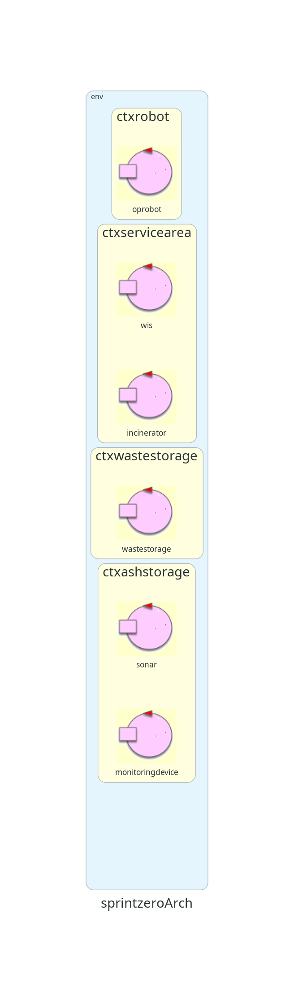
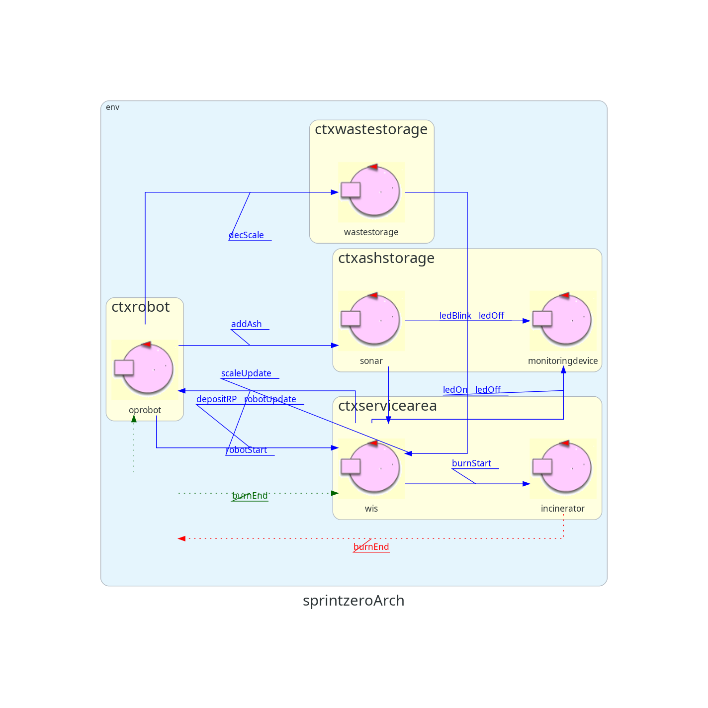
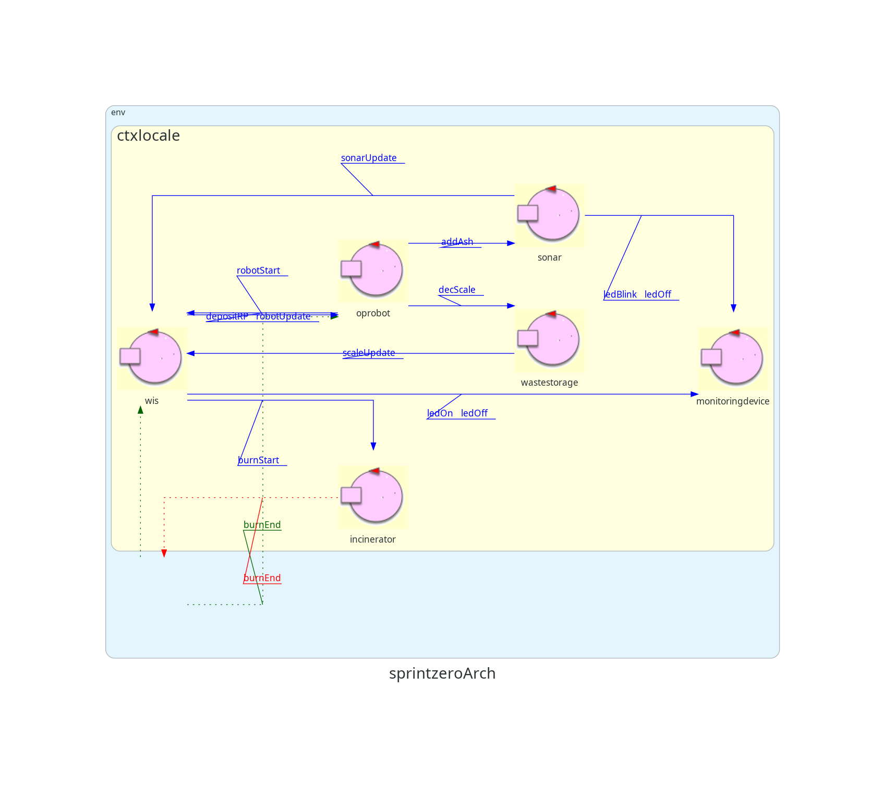

Introduction
Richiesta del committente
Requisiti del Sistema
- WasteStorage
R1.1: Misurare il peso totale dei rifiuti (RP) presenti nel Waste Storage attraverso il weighing
device (scale)
- Monitoring Device
- R2.1: Misurare il livello delle ceneri nel AshStorage tramite il sonar.
- R2.2: Segnalare lo stato dell'inceneritore e del AshStorage tramite un LED.
- R2.2.1: Il LED deve essere acceso quando l'inceneritore è in fase di bruciatura.
- R2.2.2: Il LED deve essere spento quando l'inceneritore non è in funzione.
- R2.2.3: Il LED deve lampeggiare quando l'AshStorage è pieno o vuoto.
- Incinerator
- R3.1: Ricevere comando di attivazione per iniziare il processo di bruciatura.
- R3.2: Bruciare un RP alla volta in un tempo predefinito (BTIME).
- R3.3: Emanare un segnale (acustico o altro) alla fine del processo di incenerimento.
- OpRobot
-
R4.1: Raggiunge la posizione delle porte: WASTEIN, BURNIN, BURNOUT, ASHOUT e della HOME
- R4.2: Caricare RP dal WASTEIN e scaricare in BURNIN.
- R4.3: Tornare a HOME durante la fase di bruciatura dell'inceneritore e quando non c’e`
lavoro da
fare.
- R4.4: Caricare ceneri da BURNOUT e scaricare in ASHOUT.
- WIS (Waste Incineration System)
- R5.1: Inviare comandi di inizio lavoro al OpRobot, secondo queste condizioni:
- R5.1.1: WasteStorage non e’ vuoto
- R5.1.2: AshStorage non e’ vuoto
- R5.1.3: l'inceneritore non e’ pieno
- R5.2: Inviare comandi al Monitoring Device per attivare/disattivare il LED.
- ServiceStatusGUI (SSGUI)
- R6.1: Visualizzare lo stato del WasteStorage.
- R6.2: Visualizzare lo stato dell'AshStorage.
- R6.3: Visualizzare lo stato dell'inceneritore.
- R6.4: Visualizzare lo stato del OpRobot.
Analisi dei Requisiti
Modellazione della Mappa:
Rappresentiamo la mappa attraverso un sistema di coordinate cartesiane interpretabile dalla macchina.
-
Service Area: Area rettangolare delimitato da bordi con vertici in (0, 0) (LW, 0) (0, LH) (LW,LH)
- WasteIn: segmento in (0, LH), (WX, LH)
- AshOut: segmento in (AX, LH), (LW, LH)
- Home: struttura rettangolare percorribile (0,0) (HX,0) (0, HY) (HX, HY)
- BurnIn: segmento con vertici in A,B
- BurnOut: segmento con vertici in B,C
- Ostacolo: area non percorribile in OA, OB, OC, OD
- Dove A,B, C,D,OA,OB,OC,OD sono dei punti.
Modello Strutturale e Comportamentale:
-
Inceneritore:
- Riceve Comandi wireless.
- Riceve gli RP attraverso il BURNIN port.
- Brucia un RP alla volta in BTIME secondi.
- Invia un segnale acustico alla fine del processo di incenerimento.
- Le ceneri sono estratte attraverso il BURNOUT port.
-
MonitoringDevice:
- Raggiunge le posizioni delle porte WASTEIN, BURNIN, BURNOUT, ASHOUT e HOME.
- Carica gli RP dal WASTEIN e li scarica in BURNIN.
- Torna a HOME durante la fase di bruciatura dell'inceneritore e quando non c'e` lavoro da
fare.
- Carica le ceneri da BURNOUT e le scarica in ASHOUT.
-
WasteStorage
- Misura il peso totale dei rifiuti presenti nel Waste Storage attraverso il weighing device
(scale).
- Dotato di un dispositivo di pesatura (Scale) per misurare il peso totale dei RP.
- Fornisce informazione sul peso degli RP attualmente contenuti in Waste Storage.
-
OpRobot
- DDR robot che agisce come attuatore fisico.
- Può spostarsi tra diverse posizioni (HOME, WASTEIN, BURNIN, BURNOUT, ASHOUT).
- Carica da WASTEIN gli RP e Scarica in BURNIN
- Torna in HOME quando inceneritore è in fase di burn
- Carica da BURNout e scarica in ASHOUT
- Controllato da WIS
- Controlla il DDR Robot
-
WIS:
- Direttore del sistema
- Legge gli input:
- Riceve il segnale inceneritore
- Riceve Segnali da waste in
- Riceve Segnali da AshStorage
-
Indirizza il robot.

Modello delle Interazioni:
- WIS -> OpRobot:
Command: Invia comando al OpRobot per l’inizio della routine di combustione.
- Incinerator -> WIS, OpRobot:
Status Signal: Invia messaggi di status al WIS (aggiornamento facade e
MonitoringDevice) e al robot (deve scaricare ceneri)
- WIS -> Incinerator:
Activation Command: Invia comandi di attivazione all'Incinerator per iniziare il
processo di bruciatura.
- MonitoringDevice -> WIS:
Sonar Data: Invia i dati del Sonar per determinare il livello delle ceneri
nell'AshStorage.
- WIS -> MonitoringDevice:
LED Status Command: Invia comandi al MonitoringDevice per attivare/disattivare il
LED per segnalare lo stato dell'Incinerator.
- WIS -> ServiceStatusGUI (SSGUI):
Update GUI: Invia aggiornamenti dello stato del WasteStorage, AshStorage,
Incinerator e OpRobot per la visualizzazione sulla SSGUI.
- OpRobot -> ServiceStatusGUI (SSGUI):
Update GUI: Invia aggiornamenti dello stato dell’OpRobot, per la visualizzazione
sulla SSGUI.
- WasteStorage -> WIS
Scale Data: Invia aggiornamenti degli RP da bruciare
Modello Architettura dai Requisiti

Esempio Diagramma di Sequenza:
- WIS legge il peso totale dei RP nel Scale WasteStorage.
- Sonar invia la distanza misurata nel AshStorage a
WIS.
- WIS verifica lo stato del WasteStorage e dell'AshStorage tramite
WIS.
- WIS invia un comando di inizio lavoro a OpRobot.
- OpRobot si sposta al WasteStorage e raccoglie un RP.
- OpRobot si sposta al BURNIN port e deposita il RP
nell'Incinerator.
- OP Robot aggiorna suo stato
- WIS invia un comando di attivazione all'Incinerator.
- Incinerator brucia il RP e alla fine invia un segnale al sistema.
- OpRobot va a raccogliere le ceneri dall'Incinerator.
- OpRobot raccoglie le ceneri dal BURNOUT port e le deposita
nell'AshStorage.
- WIS aggiorna lo stato del sistema sulla SSGUI.
Architettura del modello simulato:

By Andrea Raffaelli email: andrea.raffaelli2@studio.unibo.it

By Edoardo De Divitiis email: edoardo.dedivitiis@studio.unibo.it

By Davide Moricoli email: davide.moricoli@studio.unibo.it
GIT repo: https://github.com/AndreaRaffaelli/TemaFinale2024_ISS